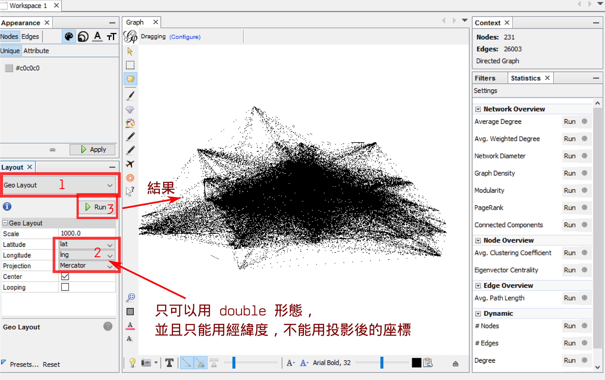
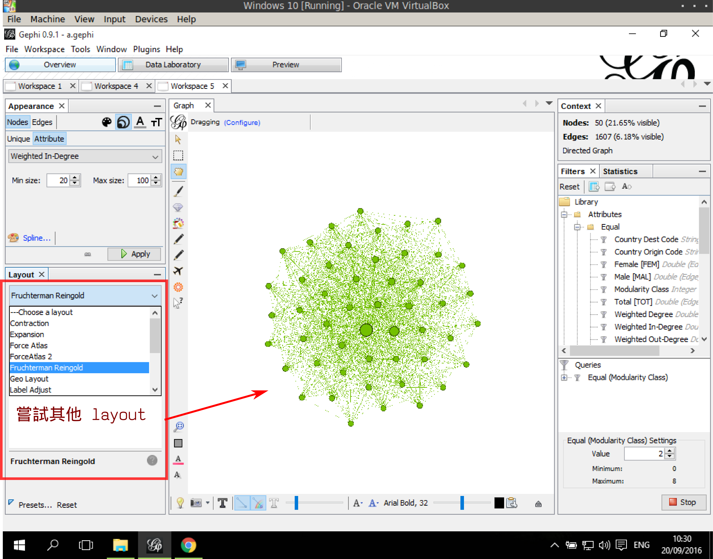
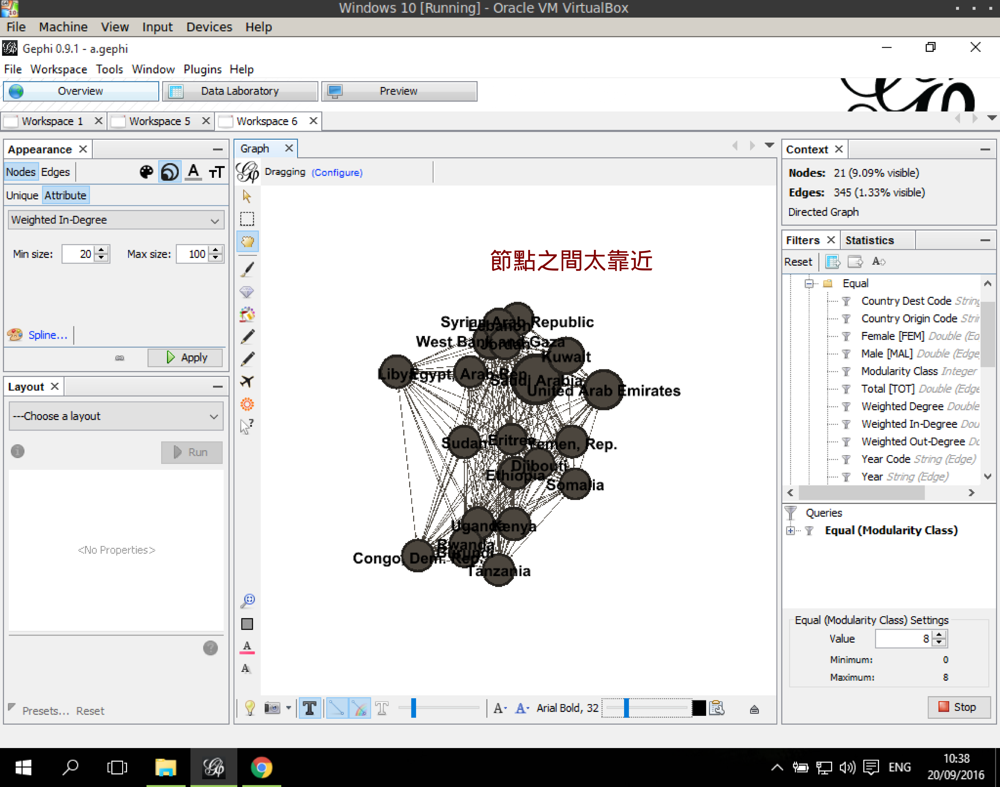
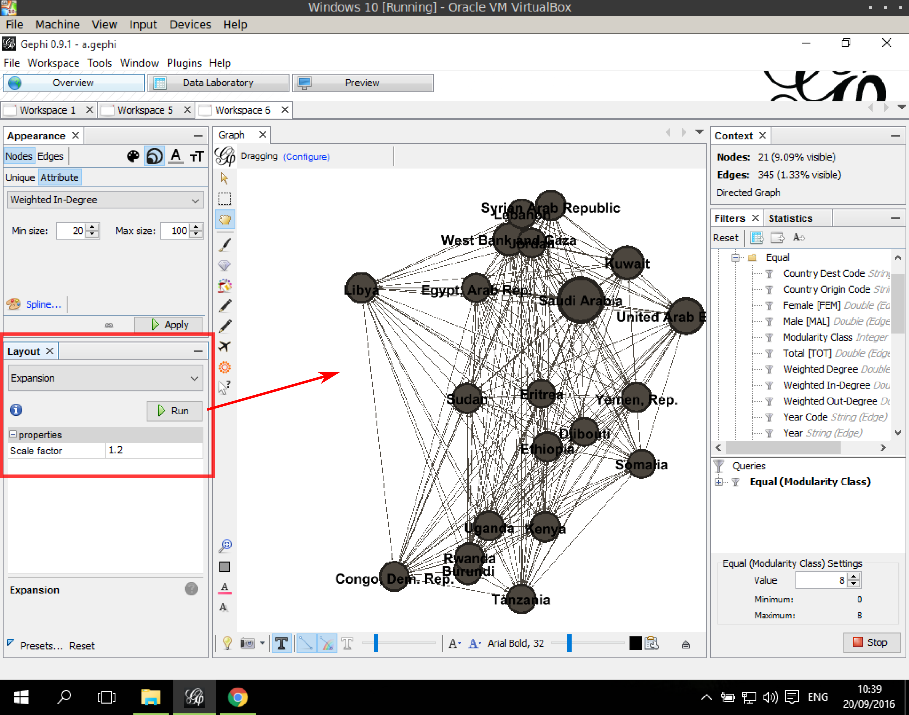

網絡的佈局 (Layout)
網絡的佈局，其實是指如何將節點散佈在繪圖的空間中。透過各種演算法，以讓節點可以依據某些規則來分佈。網絡中節點可能是各種物件，並不一定具有固定的地理位置。 Gephi 提供的佈局方式主要包括以下幾種，詳情請參考官網的說明：
- Geo-Layout: 其實是根據經緯度來繪製，這部分比較沒有網絡的演算法。
- Frutherman-Reingold (force directed layout algorithm, spring layout): 參考資訊
- Force Atlas2: 參考資訊
- OpenOrd: 參考資訊
Geo-Layout
- 在左邊欄位的 Layout 底下的下拉選單中，點選 Geo Layout。
- 在 Latitude 選擇 緯度欄位 (lat), 在 Longitude 下拉選單選 經度欄位 (lng)， Projection(投影) 部分則選擇一個適當的投影方式。
- 點 Run 執行，中間的網路預覽會出現節點根據經緯度分佈的網路。

Frutherman-Reingold
操作過程很簡單，就直接在 Layout 底下的下拉選單點選 Frutherman-Reingold， 按 Run 執行。其他 佈局方式也是類似操作，參數部分則隨意測試。

放寬 & 濃縮
在有一些情況下，上述各種佈局演算法所產生的佈局結果可能會出現節點之間太靠近的狀況，這時候需要「放寬」(Expansion)；有時候節點之間空隙太大，這時候需要的是「濃縮」(Contraction)。

點選了 Expansion 之後， Scale factor 設定大概在 1.2 左右，點 Run 看放寬結果是否滿意。若需要進一步放寬，則再點一次 Run 即可。

反之，在 Contraction 部分，則需要將 Scale factor 設定在 0.8 左右。